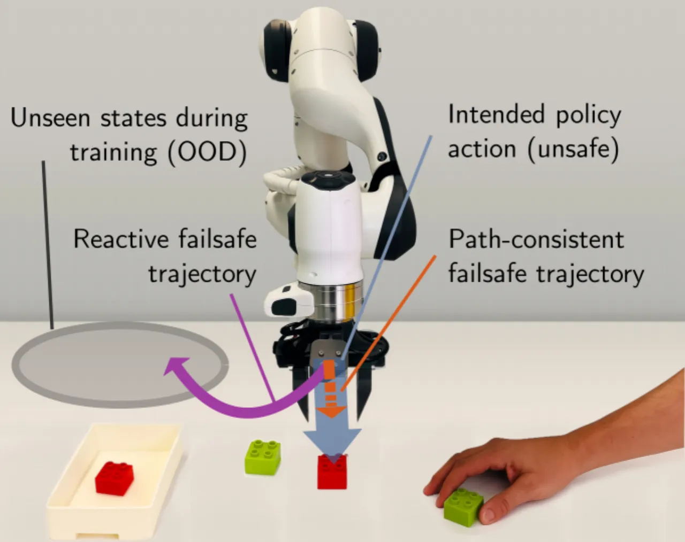
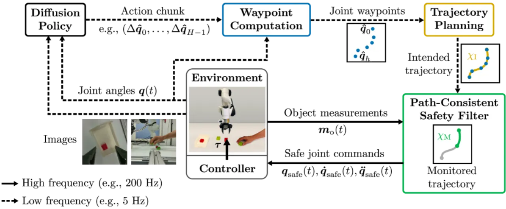
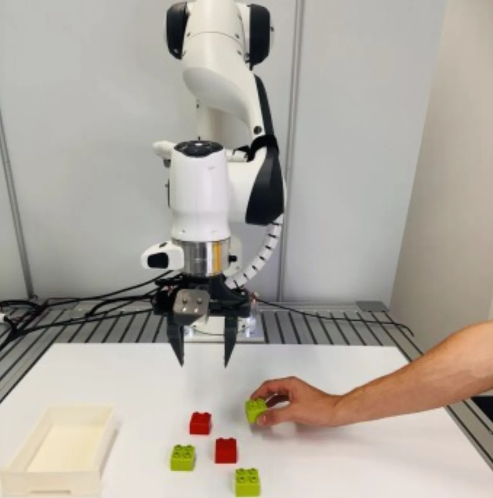
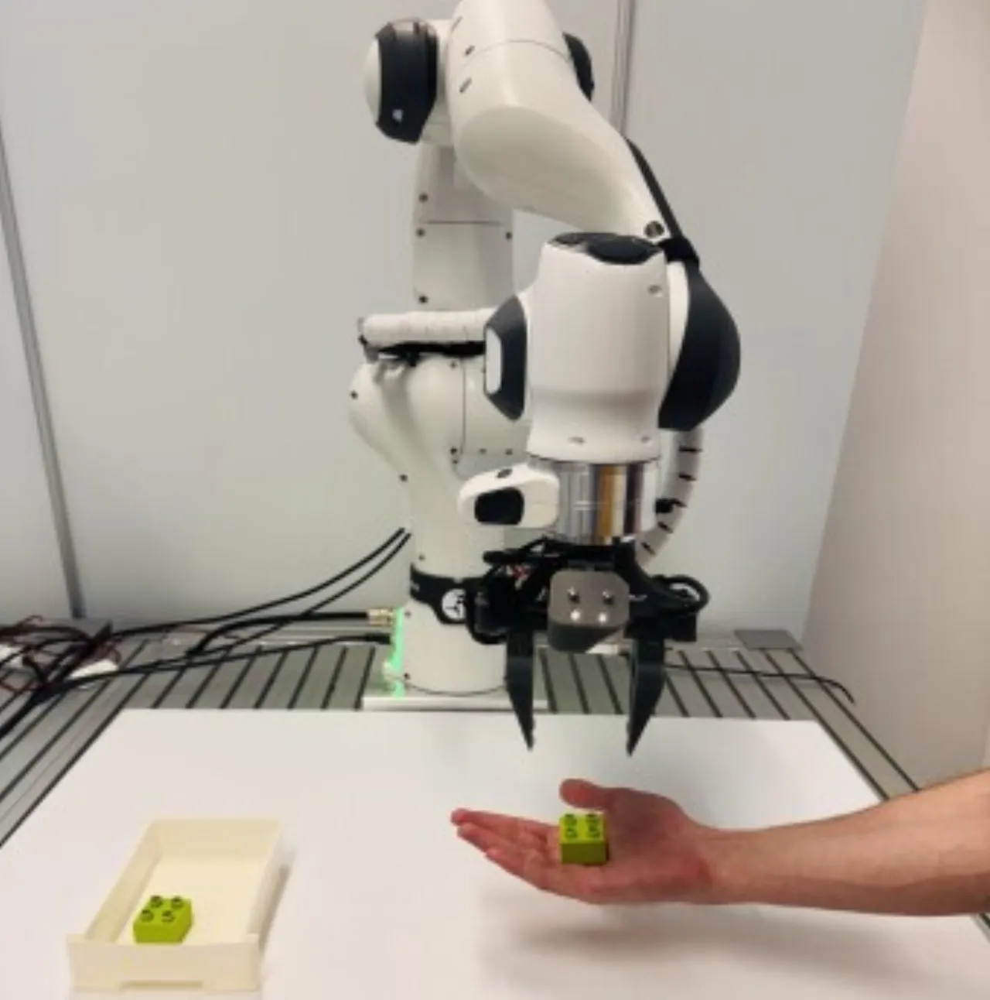
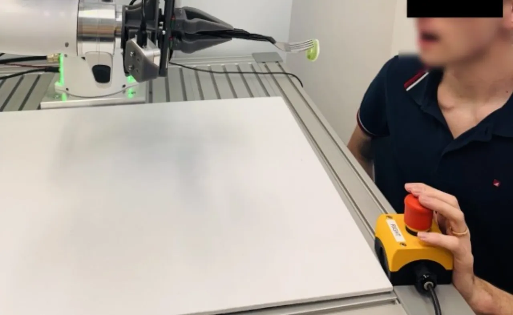

Diffusion Policy 凭借大规模演示数据学习复杂操作行为，但本身缺乏安全保证。PACS（Path-Consistent Safety Filtering）通过在动作序列生成的轨迹上执行"路径一致性刹车"，在保持训练分布一致性的同时，借助集合可达性分析为动态环境提供形式化安全保证，无需修改策略网络本身。
Diffusion Policy 在复杂操作任务上表现出色，但由于其随机采样特性，无法保证安全行为，必须依赖外部安全机制。现有反应式安全过滤器（如 Control Barrier Functions，CBF）在阻止危险动作的同时，会将机器人推入训练分布之外的状态，导致后续行为不可预测、任务失败。
"Diffusion policies cannot guarantee safe behavior, requiring external safety mechanisms."

PACS 的核心思想是：不直接修改单步动作，而是将扩散策略生成的整个 action chunk 转化为平滑的预期轨迹，并始终将其与刹车停止轨迹拼接，通过集合可达性分析实时验证整段轨迹的安全性。若通过验证则执行预期运动，否则切换到刹车停止——整个过程保持轨迹与训练分布的一致性。

将 action chunk 中的路径点序列转化为时间最优、满足运动学与动力学约束的平滑轨迹。关键设计在于轨迹始终经过所有 action 路径点，确保机器人沿扩散策略"意图"的路径运动，而非被外力偏转至未见状态。这种设计使得在遇到障碍物时可以通过降速（而非改变方向）来保证安全，从而避免分布漂移。
在运行时以 1 kHz 的频率，对机器人末端执行器的可达集合进行计算，同时考虑测量误差与动态障碍物（如运动中的人手）的不确定运动范围。若预期轨迹的可达集合与障碍物占位集合存在交集，则系统立即切换到预先计算好的刹车轨迹，保证碰撞前机器人可以完全停止。
预期轨迹与刹车轨迹始终拼接为完整的"监控轨迹"：正常执行时跟随预期段；一旦可达性检验失败，无缝切换到刹车段。等待障碍物离开后，系统可以从当前状态重新请求扩散策略生成新的 action chunk，继续任务，整个过程对策略网络完全透明。
相比逐步执行单个 action 的方法，利用完整 action chunk 规划轨迹可提升 28% 的任务成功率。多步动作序列提供了更多的时间裕量来执行路径一致性刹车。
CBF 等反应式方法通过修改每个时刻的动作来规避障碍，导致机器人进入训练时从未出现的状态。PACS 从不修改方向，只在原有路径上减速或停止，保持训练分布内。
实验在两个层次展开：① 仿真环境使用 RoboMimic 基准（Lift、Can、Square 三个任务），每种配置 100 次 rollout，引入随机进入工作空间的动态障碍物球体；② 真实硬件使用 Franka FR3 机械臂，在三个人机交互任务（分类、交接、喂食）上各执行 30 次 rollout。
| 方法 | Lift | Can | Square | 平均 |
|---|---|---|---|---|
| Operational Space Control（上界） | 1.00 | 0.99 | 0.74 | 0.91 |
| Safety Filter OFF | 0.92 | 0.83 | 0.34 | 0.70 |
| Control Barrier Functions | 0.11 | 0.00 | 0.00 | 0.04 |
| PACS (SSM) | 0.97 | 0.80 | 0.30 | 0.69 |
| PACS (PFL) | 0.93 | 0.85 | 0.38 | 0.72 |
| 任务 | PACS 任务成功率 | PACS 安全成功率 | PACS 安全违规 | Filter OFF 安全违规 |
|---|---|---|---|---|
| Sorting（分类） | 80% | 80% | 0% | 67% |
| Handover（交接） | 97% | 97% | 0% | 32% |
| Feeding（喂食） | 63% | 63% | 0% | 85% |
| 平均 | 80% | 80% | 0% | 56% |
| 方法 | 任务成功率 | 平均执行时长 |
|---|---|---|
| PACS | 80% | 32.6 ± 11.1 s |
| Control Barrier Functions | 43% | 35.8 ± 18.8 s |



对比 action chunk（多步）与 single-action（单步）版本的 PACS：使用单步动作时，SSM 变体平均成功率为 0.41，PFL 变体为 0.44；使用完整 action chunk 后，成功率分别提升至 0.69 和 0.72，提升幅度达 28%。这证实了将完整动作序列转化为时间轨迹是保持任务成功率的关键设计决策。
论文明确指出："Handling (semi-)static obstacles via constraint-aware online replanning is an interesting avenue for future work."当前 PACS 设计主要针对动态进入工作空间的物体（如人手），对于已在场景中静止存在的障碍物，需要在线轨迹重规划能力，这留待未来工作解决。
PACS 的安全降速策略（在原有路径上减速而非改变方向）成立的前提是：扩散策略的观测输入中不包含末端执行器的显式速度。若策略被训练成依赖速度观测，则降速可能仍导致分布偏移，需要额外处理。
集合可达性分析对动态障碍物（如人手）的运动采用保守的包络假设。若实际运动超出预设的不确定性范围，安全保证可能失效。此外，感知系统的延迟和误差也会影响实时安全验证的可靠性。